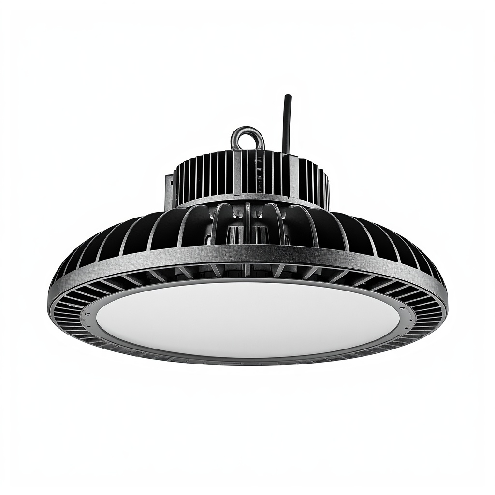

Cloche Industrielle UFO (100–300W)
Une cloche industrielle alimentée secteur pour entrepôts, usines, supermarchés et halls d’exposition : de 100 à 300W, IP65, un faisceau large de 120° et une lumière diurne 6500K, refroidie par ailettes aluminium.

Le luminaire standard pour les plafonds hauts : entrepôts, usines, supermarchés et halls d’exposition. Le format rond « UFO » concentre des LED efficaces derrière une lentille de 120° avec refroidissement aluminium à ailettes pour une longue vie à forte sortie. Quatre puissances (100–300W) s’adaptent à différentes hauteurs de montage, et une série étanche est disponible pour les environnements humides et de lavage. Un produit d’extension naturel pour les distributeurs vendant déjà la gamme extérieure.
Spécifications
| Options de puissance | 100 / 150 / 200 / 300W |
|---|---|
| Source d’énergie | Secteur AC |
| Indice IP | IP65 (série étanche disponible) |
| Angle de faisceau | 120° large |
| Température de couleur | 6500K diurne |
| Refroidissement | Ailettes aluminium |
| Certification | CE + RoHS |
| Personnalisation | OEM / ODM — puissance, emballage, marque |
Pourquoi les acheteurs choisissent
Conçue pour les plafonds hauts. Faisceau de 120° et 100–300W couvrent une plage de hauteurs avec efficacité.
Longue vie. Le refroidissement aluminium à ailettes garde les LED au frais pour un service industriel fiable.
Option étanche. Une série scellée pour les environnements humides et de lavage.
Certifié et prêt pour l’OEM. CE + RoHS avec chaque devis ; puissance et marque personnalisables.